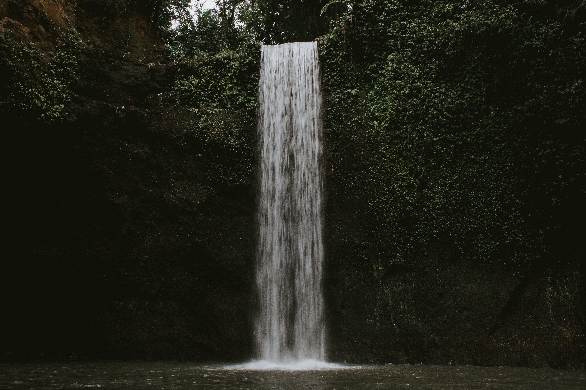

Pegunungan

Indonesia adalah salah satu negara yang memiliki banyak gunung yang indah. Terlebih lagi banyak gunung-gunung di Indonesia yang sudah terfasilitasi jalur pendakian dan juga pos-pos pemberhentian untuk beristirahat dan berkemah
sebelum menuju puncak. Selain itu iklim pegunungan lebih sejuk dibandingkan dengan iklim perkotaan. Nah, jalan-jalan ke gunung cocok banget nih buat kamu yang sedang mencari suasana yang lebih tenang dan nyaman apalagi sembari
melihat indahnya pemandangan di sekitar pegunungan.
Pantai

Selain pegunungan, Indonesia juga merupakan negara yang memiliki wilayah perairan yang luas, sehingga terdapat berbagai pantai yang tersebar berbagai daerah di Indonesia. Di pantai kita juga dapat melakukan berbagai macam
kegiatan seperti berenang, bermain air, bermain pasir, dan yang paling ditunggu-tunggu yaitu momen ketika menyaksikan terbenamnya matahari.
Air terjun

Buat kamu yang suka jalan-jalan menikmati keindahan alam, main ke air terjun cocok banget nih sebagai destinasi tempat wisata kamu selanjutnya. Apalagi air yang mengalir di sekitar air terjun biasanya bersih dan sejuk lho, jadi
kamu bisa berenang, main air, atau hanya sekedar mencelupkan kaki aja rasanya nikmat sekali.
Perpustakaan

Nah, buat kamu yang mungkin udah bosen buat wisata alam atau pengen jalan-jalan tapi tetap produktif, kamu bisa banget nih main ke perpustakaan. Banyak banget kegiatan produktif yang dapat kamu lakukan seperti membaca buku,
mengerjakan tugas, dan bekerja. Selain itu, kamu juga bisa memperluas wawasanmu dengan bermain ke perpustakaan dan ga butuh biaya yang mahal kok buat main ke perpustakaan. Kita juga ikut berperan melestarikan budaya membaca lho
dan meningkatkan angkat minat literasi di Indonesia.